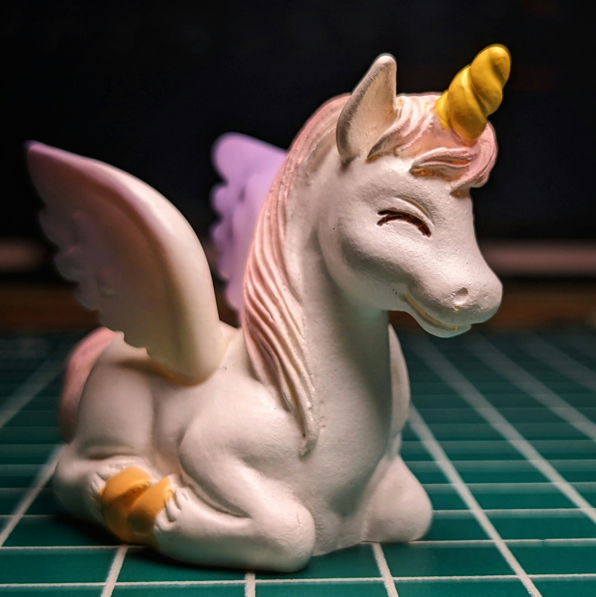

About
Unicorns are legendary creatures that have captured human imagination for thousands of years. With their magnificent horns and ethereal beauty, they symbolize purity, grace, and untamed magic.
From ancient mythology to modern pop culture, unicorns continue to inspire wonder and delight across all ages. Their legend spans continents and centuries, appearing in the folklore of Greece, China, Scotland, and beyond.
Features
Unicorns are known for a remarkable set of traits that set them apart from all other creatures:
- A spiraling horn with powerful healing properties
- A coat that shimmers in every color of the rainbow
- The ability to gallop faster than the wind
- A gentle nature that brings calm to those around them
Recent highlights
- Unicorn spotted near the Enchanted Forest of Avalon
- New research suggests unicorn horns can purify any water source
- The annual Unicorn Festival drew record crowds this spring
Gallery
A glimpse into the magical world of unicorns — captured in rare moments of stillness.

Contact
Have a unicorn sighting to report, or just want to share your love of these magnificent creatures? Reach out to us!
- Email: hello@example.com
- Twitter: @unicornwatch
- GitHub: github.com/unicornwatch